Guus Hero Guide – Healer from the Way of Honor for Hero Wars Alliance
- By: Alexandre Domingos. .
GUUS is a powerful support Hero from the Way of Honor who specializes in keeping his team alive through healing and critical hit synergy. This wise old man and his golden goose boost allies' critical potential while shielding them from burst damage and damage-over-time effects. And yes his goose bites hard!
Guus is a true meta-changer in Hero Wars Alliance. His golden feathers grant critical hit chance to all allies, turning non-crit heroes like Keira, K'arkh, and Peech into deadly threats. Meanwhile, high-crit heroes such as Kayla, Dante, and Artemis become even more dangerous, benefiting from both stronger critical chains and massive healing. Guus elevates the damage and survivability of any team he joins.
Who Is Guss
- CLASS: Healer
- FACTION: Way of Honor
- POSITION: Middle Line
- MAIN STAT: Strength
- SYNERGIES: Way of Honor Heroes, especially Qing Mao, Ishmael, Artemis, Tristan, Galahad
Guus Skills Upgrade Priority - Hero Wars Alliance
Learn how to prioritize Guus's skills in Hero Wars Alliance to maximize healing and support for your team with Golden Feathers.
Under the Wing
This is Guus's main skill. It heals all allies and gives them a Golden Feather, which increases their critical hit chance for 8 seconds. If applied again, the timer is extended. This effect is passive and stays throughout the battle.
Evolution Priority: High – This is Guus’s most important skill. It heals everyone and boosts damage output with critical hit chance. Upgrading this first gives your team better survivability and consistent buffs.
Feather Squad
This skill gives Golden Feathers to nearby allies in front of Guus. Every time those allies take damage, they recover some Health thanks to the feather. It’s like giving them mini healing shields.
Evolution Priority: Medium – This is useful to keep front-line heroes alive longer. It's not as strong as the first skill but becomes more valuable in team fights where allies take constant damage.
Beak Peak
If an ally with a Golden Feather is about to fall below 25% Health, this skill automatically heals them. The longer the feather has lasted, the stronger the heal. The feather disappears after saving them.
Evolution Priority: Medium-Low – This can save an ally in a critical moment, but it only works once per feather. It’s reactive, not constant like the top skills, so it’s less reliable early on.
Honkageddon
Guus’s critical hits no longer deal extra damage, but instead, they heal allies around the target and apply Golden Feathers. Allies with feathers then deal more critical damage, especially Honor Heroes.
Evolution Priority: Low – This is more situational. It’s useful in Honor teams or for bonus healing, but it depends on Guus landing critical hits. Upgrade this last unless you use many Honor Heroes.
Best Skin for Guus Hero Wars Alliance
Discover the best skin upgrade order for Guus in Hero Wars Alliance to boost his healing and support potential in battle.
Default Skin
Strength +1,365
Each Strength point gives Guus 40 Health and increases his physical attack since Strength is his main stat. This boosts all his healing abilities and Golden Feather effects.
Evolution Priority: Very High – This is the most important skin to level first. It directly increases Guus’s physical attack, which powers up all his healing effects and buffs.
Angel Skin
Health +108,285
With a massive health boost, this skin greatly increases Guus’s durability in all fights. More health allows him to withstand more incoming damage and continue supporting the team.
Evolution Priority: High – A solid upgrade after the Default Skin. While it doesn't increase his healing power directly, the survivability helps him stay active longer in fights, especially against burst teams.
Dapper Skin
Magic Defense +10,650
This skin helps Guus survive longer against strong magical damage dealers. More survivability means he can keep healing and buffing allies for a longer time.
Evolution Priority: Medium – It's a great second option. Guus is a support hero, so keeping him alive longer in battles with magic threats is essential, especially in the backline.
Gentleman Skin
Toughness +2,960
Toughness reduces damage taken when Guus’s health is low, regardless of the damage type. This helps him survive when he's almost down, but only activates in critical moments.
Evolution Priority: Low – This is the least urgent skin to evolve. While helpful in dangerous fights, the effect is situational and less impactful overall compared to boosting healing output or regular survivability.
Guus Artifact Evolution Priority Hero Wars Alliance
Discover which artifacts to prioritize for Guus to boost healing, survivability, and team-wide critical synergy in Hero Wars Alliance!
1st - Weapon: Golden Goose
This artifact boosts Toughness, which reduces all types of damage Guus receives when his health is low. This is essential because Guus is a mid-line healer who needs to stay alive to consistently provide healing and apply Golden Feathers to allies.
Evolution Priority: High – Keeping Guus alive longer means more healing and more critical boosts for your team. This makes the weapon the top priority for survival and team support.
2nd - Book: Warrior's Code
This artifact grants Critical Hit Chance and Physical Attack. These directly improve Guus’ skill "Honkageddon", allowing his critical hits to heal nearby allies and spread Golden Feathers more frequently.
Evolution Priority: Medium – While not his main role, Guus’ crit-based healing becomes more impactful in longer fights or with critical-focused teams. Level this second for added team synergy and healing support.
3rd - Ring: Ring of Strength
This artifact boosts Strength, which increases Guus’ health and physical attack. While both are helpful, this provides less immediate impact on his healing abilities compared to the other artifacts.
Evolution Priority: Low – Although it improves survivability and basic stats, it doesn't directly enhance Guus’ healing mechanics or critical utility. Upgrade this last after ensuring better team-wide impact through the other artifacts.
Guus Glyph Evolution Priority
Learn the best glyph upgrade path for Guus in Hero Wars Alliance to boost his healing and support effectiveness in battle.

1st - Physical Attack:
This is Guus’s most important glyph. His healing and Golden Feather effects scale directly with his physical attack. Upgrading this glyph significantly increases his support capabilities.
Evolution Priority: High – Directly powers all healing and buffing skills.

2nd - Health:
Guus’s healing with Beak Peak is based on a percentage of his own max health. This glyph increases that healing and improves his durability in longer fights.
Evolution Priority: Medium–High – Boosts survivability and enhances healing from skill 3.
3rd - Critical Hit Chance:
Guus’s critical hits activate extra effects like healing and Golden Feather sharing. While useful, his performance doesn’t fully depend on crits, making this a secondary priority.
Evolution Priority: Medium – Adds value, but not essential for his core utility.

4th - Armor:
Armor helps Guus resist physical damage, especially in the front line. However, since he’s primarily a support hero and usually positioned safely, this glyph isn’t a top priority.
Evolution Priority: Low – Defensive, but not crucial to his role.
5th - Strength:
While strength does provide a minor boost to both health and physical attack, its scaling is much less efficient than upgrading the direct Physical Attack and Health glyphs.
Evolution Priority: Very Low – Offers minor stats compared to more impactful glyphs.
Talisman Guide for Guus – Hero Wars Alliance
Talisman of Feathers
The Talisman of Feathers enhances Guus's effectiveness by boosting both his healing output and critical synergy. It provides valuable Strength and Critical Hit Chance stats that benefit his key abilities.
- 1 Slot – Strength +2000
Each point of Strength grants:
🔸 40 health points
🔸 +1 physical attack (since Strength is Guus's main stat)
This slot significantly increases Guus's healing and survivability due to the scaling of his abilities with both health and physical attack. - 3 Slots – Critical Hit Chance
Each of these slots grants up to +2200 Crit Hit Chance with rerolls.
This stat is essential for activating extra effects in Guus’s skills such as Golden Feather sharing and additional healing. More critical hits translate to more support triggers, improving his reliability in extended battles.

Guus SYNERGIES - Hero Wars Alliance
SYNERGIES: Way of Honor
Artemis
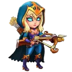With her recent rework, Artemis deals even more critical damage. Guus enhances her potential, and the higher her allies' health, the more damage she deals.
Galahad
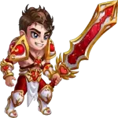Galahad benefits from vampirism and, with a critical hit chance from his Talisman, he can activate Guus' synergy effects more effectively.
Ishmael
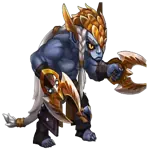A high critical damage warrior with vampirism. Guus boosts Ishmael's survivability and critical hit effectiveness even further.
Qing Mao

Needs to equip the Talisman of Loss to gain critical hit chance, enabling her to trigger Guus’ synergy and deal more reliable damage.
Tristan
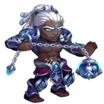Though Tristan lacks critical hit stats, he provides strong armor penetration and supports other Way of Honor heroes amplified by Guus.
Other Synergies with Other Factions
Astrid
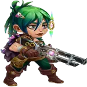Synergy: Has a talisman that grants critical hit chance if used in battle.
Jet
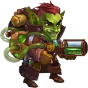Synergy: Provides critical hit chance to all allies.
Sebastian
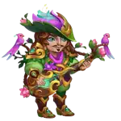Synergy: Increases critical hit damage for allies.
Kayla

Synergy: Can use a critical hit chance talisman to trigger synergy with Guus.
Lara Croft
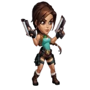Synergy: Deals a high amount of critical damage.
Jhu
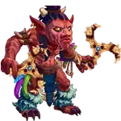Synergy: Has naturally high critical hit damage output.
Oya
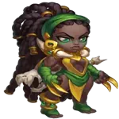Synergy: Heals allies when they deal critical damage.
Yasmine
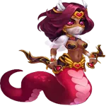Synergy: One of the highest critical damage dealers in the game.
Ginger
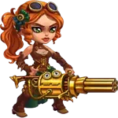Synergy: Has a talisman that grants critical hit chance when used in battle.
Julius

Synergy: Provides shields, healing, and when activating his artifact, grants critical hit chance to allies.
Video suggestion
Guus Guide Conclusion
Guus is not just a healer he’s a critical synergy enabler who supports his team by enhancing survivability and boosting their damage potential. Prioritizing the Golden Goose weapon ensures that Guus can stay alive longer during intense battles, maximizing the uptime of his healing and Golden Feather effects. Since his skills depend heavily on him remaining active on the battlefield, the toughness boost from this artifact is indispensable.
After securing Guus’ survivability, enhancing his Warrior's Code book provides critical hit chances and physical attack, improving the potency of his "Honkageddon" skill and reinforcing his utility in critical-based team compositions. While the Ring of Strength is helpful for boosting his base stats, it doesn’t have a direct impact on his skills, making it the least urgent to evolve. By following this artifact evolution order, players can unlock Guus’ full support potential and keep their Honor faction teams thriving in every fight.
Explore new skills with our featured heroes!
 Fafnir
Fafnir Luther
Luther Tristan
TristanLeave Your Opinion!
Did you like our Guide about Guus for Hero Wars Mobile? Is there something you didn't understand or would like to suggest changes to? We invite you to join our comment section on the Alexandre Games Blog page. Feel free to express your opinion, clarify your doubts, and share your suggestions.
Click the button below to get started: